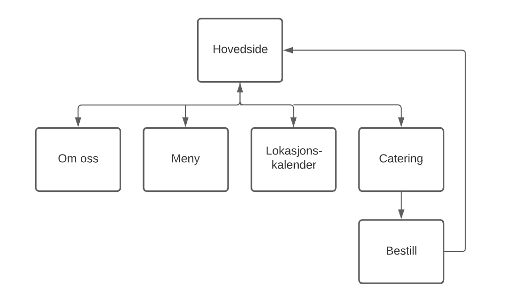

Administrative detaljer
Vår kunde
Sigur Skarby, eier av Lofoten Fresh.
Sigur er fra Lofoten, men bor for tiden i Trondheim. Han jobber på Nidar som industrikokk. Drømmen er likevel å starte en egen bedrift i Lofoten. For Sigur er lokale og gode råvarer viktig, og han vil gjerne innovere den unike mattradisjonen fra Lofoten gjennom Lofoten Fresh. Visjonen til Lofoten Fresh er i tråd med slow-foodbevegelsen.
Hensikt og mål
Lofoten Fresh er en sesongbasert foodtruck. Om somrene er det en restaurant for fast slow-food, som han tenker skal være stasjonert et fast sted. På vintrene vil inntekten basere seg på å selge gode råvarer til den lokale befolkningen, eller å flytte foodtrucken rundt i Norges land. Han håper også på at vinterturismen skal ta seg opp. I tillegg vil han tilby catering til større arranngement.
- Kundene skal få informasjon om at Lofoten Fresh og konseptet til bedriften.
- Det skal være tilgang til menyen for foodtrucken.
- Sanntids plassering av foodtrucken skal være synlig for besøkende.
Navgiasjonsstruktur
Sidens navigasjonsstruktur er bygget opp som en blanding av hierarkisk og lineær struktur, med en “drop down”-toppmeny som vil være lik på alle sidene. Dette tillater brukeren å navigere fra hovedsiden, samt de andre sidene til de fire underordnede sidene. Videre vil det på siden med catering være en lineær kobling ned til et utfyllings-skjema der brukeren kan bestille catering. Ved å trykke på logoen vil man alltid komme tilbake til hovedsiden.
Hensikten med hvordan nettsiden vil være bygget opp er tilfredsstilling av kravet om at brukeren kan komme seg rundt til hvilken som helst side på maksimalt 3 klikk. Vi gjør dette for at det skal være enkelt for brukerne å navigere. Grunnen til at “bestill catering”-siden vil være lineær koblet til “catering”-siden er fordi det ikke vil være naturlig for brukeren å bestille catering uten å først få informasjon om hvilken type catering som tilbys fra Lofoten Fresh.
Sideoppsett og utseende
- NavBar: Navigasjonsbaren skal komme til syne når man trykker på meny knappen. Da skal alternativene Hjem, Meny, Catering, Kalender og Om oss vise seg. Om man trykker på en av disse alternativene vil man bli tatt med til deres respektive sider. Når navigasjonsbaren er framme vil meny ikonet endres til et kryss for å indikere at ved å trykke her igjen vil lukke navigasjonsbaren. I tillegg til side alternativer vil navigasjonsbaren også inneholde logoen. Når navigasjonsbaren er åpen vil eventuelle logoer som er plassert på nettsiden bli gjemt slik at det kun er en logo til stede (i navigasjonsbaren). Dette gjør vi for at brukeren ikke skal bli forvirret over hvilken logo man kan trykke på for å komme seg hjem.
- Footer: Footeren sin funksjon er å informere brukeren om alternative informasjonskilder som for eksempel sosiale medier. Footeren skal også inneholde kontaktinformasjon slik at man kan komme i kontakt så fort som mulig. Footeren skal ligge på undersiden av siden.
Innhold
- Hjemsiden:Forsiden skal gi et inntrykk av hva Lofoten Fresh er, samt friste besøkende med bilder. Siden skal være minimalistisk og stilren, uten overflødig informajon. Den skal også inneholde en meny-knapp for å komme videre til mer detaljerte undersider. Forsiden skal gi informasjon om åpningstider og hilse på brukeren på forskjellige måter avhengig om det er morgen, formiddag eller kveld. Øverst på siden er logoen synlig. Siden skal ha en footer.
- Meny: Denne sida inneheld menyen med informasjon om dei ulike rettane til bedriften. For kvar rett er det eit bilde og tekst sidestilt. Når du hold over eit bilde blir bildet rundt og fleire mindre, runde bildar poppar opp med råvarane brukt i retten. Disse meny-elementa ligg i ei liste nedover sida. Menyknapp ligg øvst og footer ligg nederst på sida.
- Lokasjonssiden: Lokasjonssiden har som hovedoppgave å gi brukeren informasjon om hvor foodtrucken befinner seg til hvilken tid og om det er noen spesielle hendelser i nærmeste tid. Lokasjonssiden skal inneholde et kart som viser hvor foodtrucken befinner seg til en hver tid den er åpen med forklarende tekst. Ellers skal siden også inneholde en menyknapp for å åpne navigasjonsbaren og en logo øverst på siden. Siden skal ha en footer.
- Catering: På denne sida ligg bilder av tidlegare catering som har blitt servert av bedriften på ulike typer arrangement. For kvart arrangement er det eit bilde og tekst sidestilt. Slike element ligg under kvarandre. Menyknapp ligg øvst og footer ligg nederst på sida.
- Om oss: Om oss-siden har som hensikt å gi en mer detaljert beskrivelse av organisasjonen og hva den står for. Når du er inne på siden så vil du kunne trykke på en logo i toppen som tar deg tilbake til hjemmesiden, eller trykke på menyknappen for å navigere deg andresteder. På Om oss-siden kan du rulle deg nedover for å få informasjon og bilder angående organisasjonen og eieren. Siden skal ha en footer.
- Cateringskjema: Denne sida er eit skjema for å sende inn bestilling av catering. Denne sida har ikkje meny-knapp eller footer, men kun moglegheit for å trykk på logoen for å kome tilbake til forsida eller velge avbryt og hamne tilbake på catering-sida. Skjema vil ikkje har noko meir funksjonalitet enn å kunne fylle inn tekst, men berre vere ein hardkoda plassholdar for fremtidig utvikling.
Minimumskrav
For å oppfylle minimumkravene til bruk av javascript har vi kommet med følgende 4 JavaScript-ideer, der personen(e) som står i parentes vil ha hovedansvar for at det blir gjort innen fristene:
-
Navigasjonsbar og Footer (Anne, Vegard): Siden vi vil ha med en lik navigasjonsbar og footer på alle sidene, men slippe å gjenskrive koden i hver html-fil, har vi lyst til å legge inn en div-klasse (på formen <div class=”navbar”>) som vi kaller på i hver html-fil, også skrive et JavaScript til selve footeren og navigasjonsbaren.
-
Velkomstmelding (Aksel): Når en person ankommer siden vil personen få opp en velkomstmelding som er tilpasset hvilken tid det er på døgnet. Teksten som komme vil variere mellom: “God morgen”, “God formiddag”, “God ettermiddag”, “God kveld”.
-
Fra matrett til råvarer (Viggo): Bilde av råvarene dukker opp når du holder over bilder av matrettene. Siden det er et sterkt fokus på bruk av gode råvarer i Lofoten Fresh, vil vi få frem dette ved at besøkende kan holde over bildene av matrettene for at mindre bilder av råvarene brukt i hver rett vil komme opp.
-
Bildene forstørres når man klikker på dem (Susanne): For at besøkende på nettsiden skal kunne se bildene tydeligere hvis ønsket, vil vi implementere et javascript som gjør at hvis man trykker på bildene vil bilde bli forstørret og bakgrunnen vil bli uklar.
Når vi har oppfylt minimumskravene har vi lyst til å også skrive et JavaScript for å validere catering-skjemaet.
Plan
Planen for mappestrukturen vil være at hovedsiden er en index-fil som ligger ytterst i hovedmappen "Lofotenfresh". Videre vil alle undersidene ligge i "sides"-mappen, bildene vil ligge i "images", og de forskjellige javascriptene vil være i "scripts". Hoveddelen av stylingen vil komme fra "styling.css"-filen, mens spesielle spesifikasjoner vil komme fra nye stylingsheets i samme mappe.
For å ta hensyn til modularitet og gjennbruk av kode vil vi samle kode som blir brukt flere ganger under mappen "modularity", der blant annet koden til navbaren og footeren vil ligge.
- index.html
- sides/
- aboutus.html
- location.html
- catering.html
- order.html
- foodmenu.html
- images/
- homepagebackground1.png
- homepagebackground2.png
- locationbackground.png
- logo.svg
- scripts/
- welcome.js
- forms.js
- animations.js
- ingredients.js
- enlargepicture.js
- modularity/
- navbar.js
- footer.js
- styling/
- styling.css
- styling1.css
- styling2.css
Arbeidsfordeling og frister
| Filnavn | Beskrivelse av oppgave | Ansvar | Frist |
|---|---|---|---|
| index.html | Hjemmesiden | Anne | 29.10.2020 |
| aboutus.html | Om oss-siden | Aksel | 29.11.2020 |
| location.html | lokasjonssiden | Susanne | 29.10.2020 |
| catering.html | cateringsiden | Viggo | 29.10.2020 |
| order.html | bestill catering-siden | Susanne | 29.10.2020 |
| foodmenu.html | Matmeny-siden | Vegard | 29.10.2020 |
| images/ | Samle bilder i mappe | Viggo | 22.10.2020 |
| navbar.js | Navigasjonsbaren i javascript | Anne | 29.11.2020 |
| welcome.js | Velkomstmelding | Aksel | 29.11.2020 |
| forms.js | Bestillingsskjema for å bestille catering | Vegard | 29.11.2020 |
| footer.js | Footer til alle sidene | Vegard | 29.11.2020 |
| ingredients.js | Når man klikker på bilder av maten får man opp bilder av råvarene | Viggo | 29.11.2020 |
| enlargepicture.js | Når man holder over bildene blir de større | Susanne | 29.11.2020 |
| styling.css | hovedstylingsdokument | Aksel | 29.10.2020 |
| stylingX.js | Spesielle stylingsider | Alle | 29.11.2020 |
| modularity/ | Samle modularitet i en mappe. | Vegard | 29.10.2020 |
| Siste sjekk | Validere all kode, og overse alle sider før innlevering | Alle | 05.11.2020 |